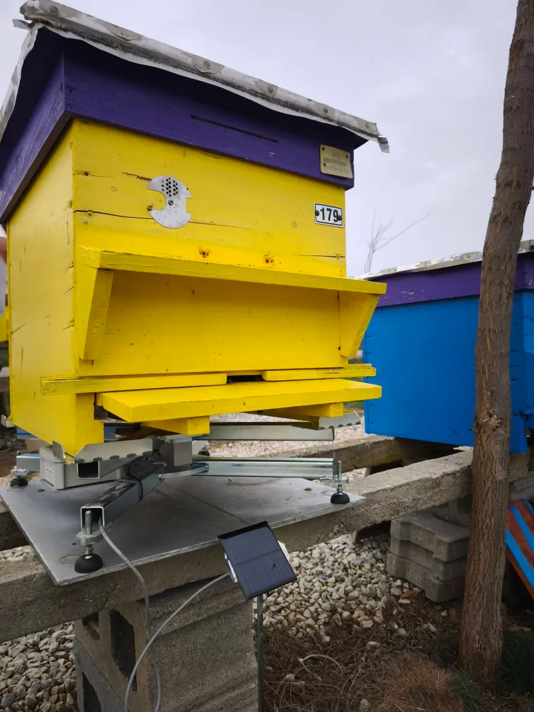

Везна за кошери
от 323 € · според модела
Следи теглото на кошера и състоянието на пчелното семейство в реално време — без да отваряте кошера.
- Тегло на кошера в реално време
- Wi-Fi, SIM карта или локален режим без интернет
- Онлайн платформа: дневен прираст, история и графики
- Измерване на всеки 68 минути, данните се пазят 12 месеца